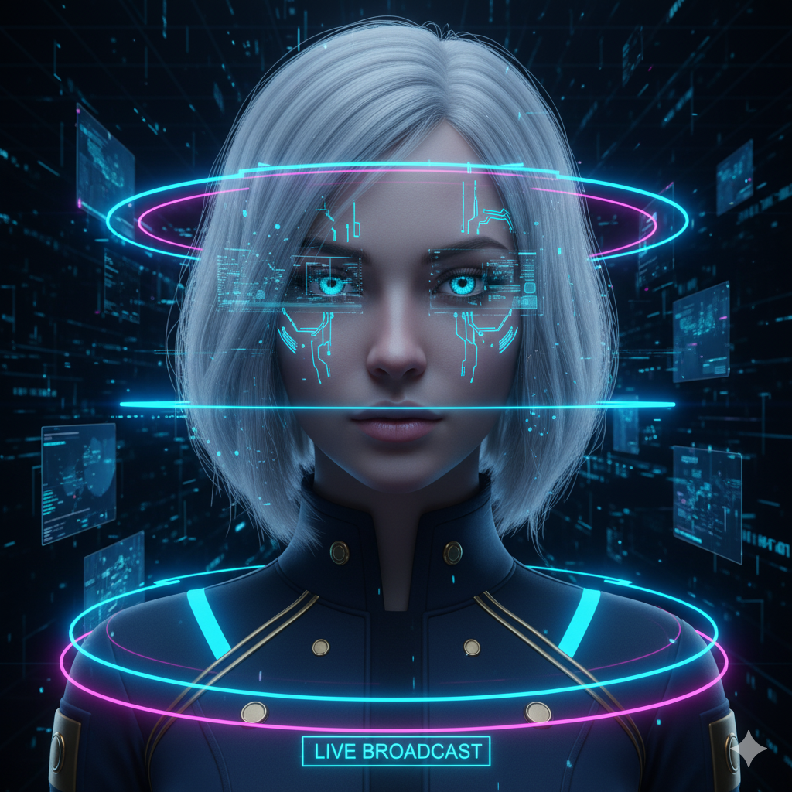

歴史資料デジタルアーカイブ
// NEWS FEED ONLINE

LIVE BROADCAST
Welcome to the digital archive
歴史資料デジタルアーカイブへようこそ！
ここでは、本Webサイトの最新ニュースや更新情報をお届けします。
新たに追加された資料やシステムの改善点など、重要なお知らせを随時更新していますので、ぜひご覧ください。
SYSTEM:
アーカイブシステム。正常稼働中。
2025.11.19
DATABASE
高田保馬データベース、資料公開。
← ホームに戻る